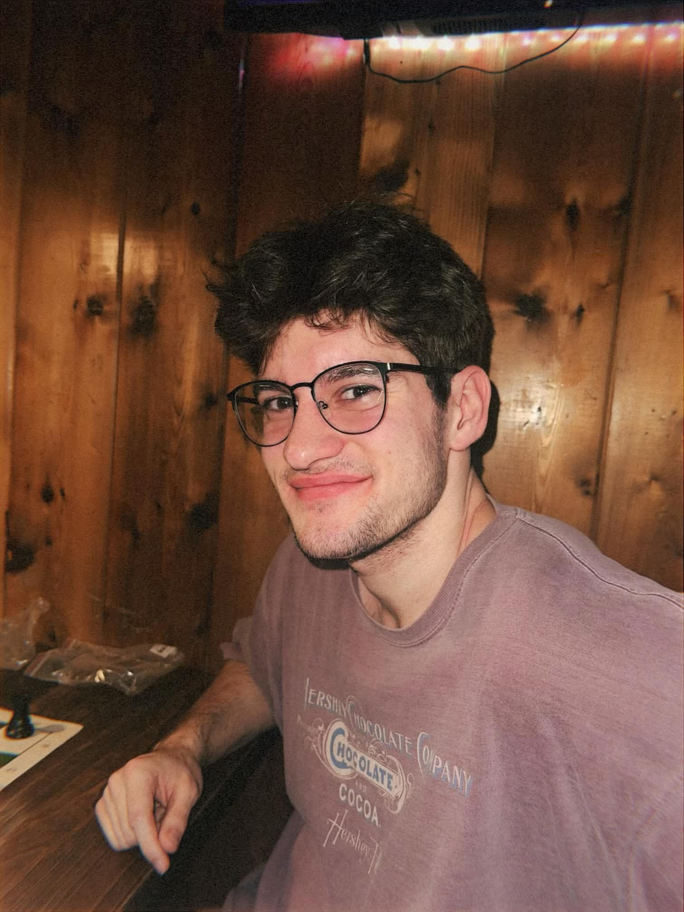

Hello, my name is Liam McAfee and I am a Computer Science student at Oregon State University graduating in Spring 2026. I have a strong interest in cybersecurity and enjoy learning how systems work, identifying vulnerabilities, and building secure solutions through coding and technical problem solving. I currently work at Oregon State University's ORTSOC (Oregon Research and Teaching Security Operations Center), a cybersecurity teaching hospital where students gain hands-on experience in a security operations center by monitoring systems, analyzing threats, and helping provide cybersecurity services to organizations that need protection but lack the resources for a full security team. Through my coursework and work experience, I continue to develop my skills in programming, security operations, and problem solving. My goal is to build a career in cybersecurity where I can help protect systems and infrastructure while continuing to grow as a security professional.